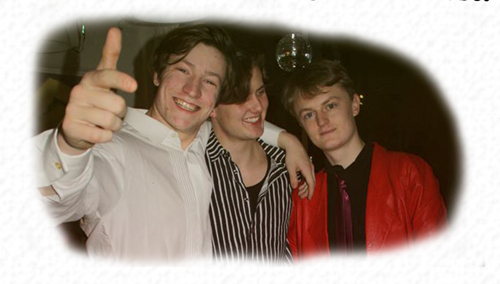

Man bliver husket af alle, efter man har afholdt den perfekte fest
En fest kan da ikke blive perfekt, er din første indskydelse. En fest er perfekt ved at være imperfekt. Til en perfekt fest har alle det godt eller slipper hæmningerne, men det kræver rette rammer, ideer og de rigtige mennesker.
1. Find ud af hvem der skal inviteres. Det er ofte meget svært, men du behøver ikke invitere Bruno Mars for at få dans. Inviter nogle personer, som skaber den type fest, du gerne vil være vært for.
2. Gør huset rent, selvom det ofte er rigtig morsomt at feste i en svinesti, så er det rart at gæster ankommer til et hus, der ligner en million.
3. Det er vigtigt at have nogle snacks klar, om det er chips og saltstænger m. dip, pizza, pølsehorn, toast eller gulerødder, selvom folk har svært ved at huske det om morgenen, vil de helt sikkert ikke glemme det, hvis det ikke var der.
4. Sæt god tid af til festen og skab en masse fede lokations i huset/lejligheden. Det gir en helt anden dynamik til en fest, end hvis folk opholder sig det samme sted hele tiden.
5. Hyr en DJ, eller ha en computer klar med spotify premium. Tydeliggør at folk skal respektere queueen.
6. Hav et event eller 2 klar på aftenen, hvis alle skulle sidde og brænde inde bag den tykke is der forekommer mellem personer, som måske ikke kender hinanden super godt. Gode ideer er Kend Din Nabo(Link), Beerpong, Ølbowling eller Salsa. Det værste ved en fest er at kede sig og det sker tit uden et bindeled mellem folk og det kræver kæmpe overskud fra gæsternes side at arrangere noget.
Hyg dig! Gå hen og snak med folk, det er din fest. Værter skal være tilstede for alle og det giver en unik mulighed for at lære nogen at kende, man måske ikke har snakket så meget med endnu.😊